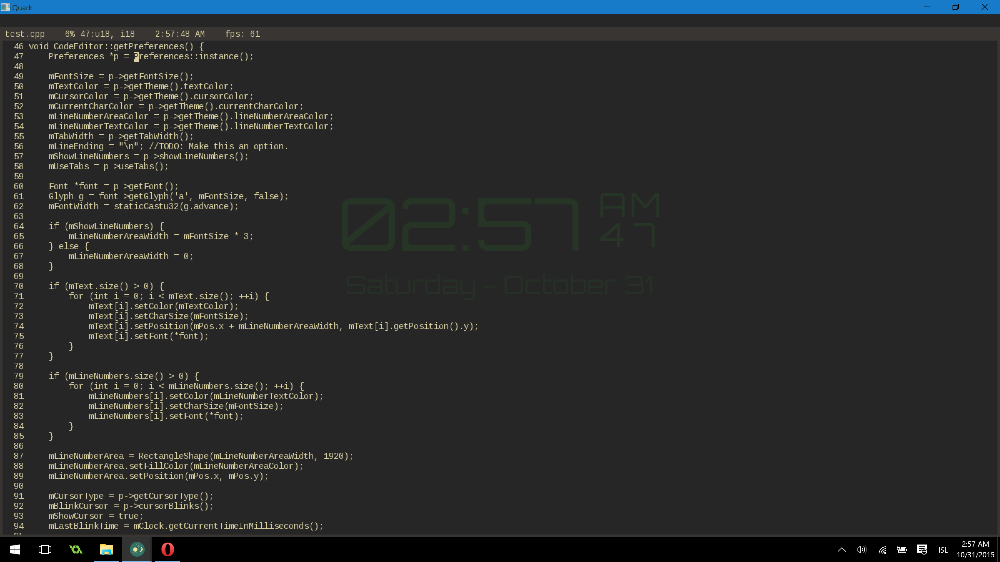

Quark is text editor written from scratch currently in development. Quark meant to be easy to use and easily extended. Quark is configured entirely in Lua with a growing libriary of functions at your disposal. No need to restart Quark as all the configurations are hot reloadable. Currently the usability of Quark is extremely limited and it is not recommended that you use this for anything serious. At this point Quark is a proof of concept, when "finished" Quark will be released open source under the zlib license.
